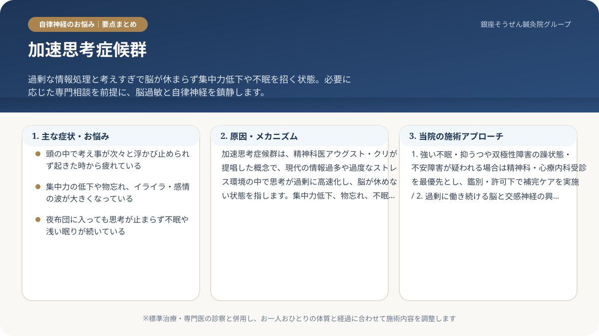

加速思考症候群の鍼灸
過剰な情報処理と考えすぎで脳が休まらず集中力低下や不眠を招く状態。必要に応じた専門相談を前提に、脳過敏と自律神経を鎮静します。
まず知っておきたい要点と改善の流れ

加速思考症候群は、精神科医アウグスト・クリが提唱した概念で、現代の情報過多や過度なストレス環境の中で思考が過剰に高速化し、脳が休めない状態を指します。集中力低下、物忘れ、不眠、イライラ、慢性的な不安、起床時からの疲労感が生じやすくなります。躁状態（双極性障害）や不安障害との鑑別も重要であり、「考えすぎて疲れている状態は普通ではない」と気づき休息と自律神経調整を図ることが大切です。
このようなお悩みはありませんか？
- ✓頭の中で考え事が次々と浮かび止められず起きた時から疲れている
- ✓集中力の低下や物忘れ、イライラ・感情の波が大きくなっている
- ✓夜布団に入っても思考が止まらず不眠や浅い眠りが続いている
- ✓常に不安感があり肩こりや頭痛・動悸などの身体症状もある
当院の施術アプローチ・改善の流れ
なぜ鍼灸で改善へ向かうのか？（作用機序の図解）
加速思考症候群に対する鍼灸は、体性-自律神経反射による交感・副交感神経の切替機序を通じて、お体本来の回復力を引き出します。

首肩・みぞおち・手足の過緊張ポイントへ、交感神経を刺激しすぎない優しい刺激を行います。
体性-自律神経反射を通じて脳幹の迷走神経核へ働きかけ、心拍変動（HF/SDNN）を整えます。
過剰なコルチゾール分泌や過覚醒状態を落ち着かせ、深い呼吸と入眠スイッチを引き出します。
「活動（昼）」と「休息（夜）」のメリハリが戻り、動悸・不眠・倦怠感の波が穏やかになります。
院長YouTube解説・関連動画
加速思考症候群の症状は、集中力の低下や物忘れ、不眠やイライラ
加速思考症候群の症状は、集中力の低下や物忘れ、不眠やイライラなどです。いつも不安があったり、起きたときから疲れていたり、感情に大きく波があったりという状態が見られることも多いです。
まず集中力が続かなくなり、過程を楽しめなくなり、何をしても退屈に感じるようになります。そして、物事の理解が遅い人や行動力がない人、ペースがゆっくりな人など、ペースの遅い人と一緒にいるとイライラするようになります。
休みでも脳を休めることができずイライラするようになり、老後が憂鬱になります。
・思考が止まらない
常に頭の中で考えが巡る: 頭の中で次々と新しい考えやアイデアが浮かび、ひとつの思考が終わる前に次の思考が始まるため、脳が休まることがありません。これにより、集中力が低下し、日常生活の中で常に何かを考え続けている感覚に陥ります。
無意識に思考が暴走する: 自分で考えを制御しようとしても、それができずに考えが暴走し、次々と浮かぶ思考に対処するのが困難になります。特に、休憩中や夜寝る前に、無意識に頭の中で考えが加速してしまい、脳が疲弊します。
・不安や焦りの増加
過度な不安感: 未来に対する過度な不安や、過去の出来事に対する後悔が頭の中を占め、常に不安感に苛まれます。どのように解決すればよいか、何をすべきかという考えが止まらず、不安が増幅されます。
焦りや苛立ち: 思考が速く、次々と考えが浮かぶため、それをすべて整理したり行動に移すことができず、結果として焦りや苛立ちを感じることがあります。この焦りは、日常生活のあらゆる場面で現れ、平常心を保つことが難しくなります。
・注意力や集中力の低下
集中力の持続が困難: 頭の中で次々と考えが浮かぶため、ひとつのことに集中するのが難しくなります。特に、仕事や勉強の際に集中力が持続せず、効率が低下します。思考が別のことに飛びがちで、重要なタスクに取り組んでいても別の考えが入り込み、注意が散漫になります。
優先順位の混乱: 多くの考えが同時に頭を駆け巡るため、どの考えが重要かを判断するのが難しくなります。その結果、優先順位をつけられず、重要なタスクや問題解決に集中できなくなります。
・過剰な自己反省や自己批判
自己反省が止まらない: 過去の出来事や発言について何度も反省し、「あのときはこうすればよかった」「なぜあんなことを言ったのか」と考え続けることがあります。これにより、過去の出来事に囚われ、前向きな思考が妨げられます。
強い自己批判: 自分の行動や考えに対して過度に厳しい批判を行い、「自分はダメだ」「もっと頑張らなければならない」といったネガティブな思考が次々と浮かびます。これにより、自己肯定感が低下し、精神的な負担が増大します。
・睡眠障害
入眠困難: 夜に考えが止まらず、布団に入っても脳が興奮状態のままで、なかなか眠りにつけません。思考が高速で巡っているため、リラックスできず、眠りに落ちるまでに長い時間がかかることがあります。
夜間覚醒: 睡眠中に突然目が覚めてしまい、その後、頭の中で考えが再び活発になって眠れなくなることがあります。これにより、睡眠の質が低下し、日中に疲労感や倦怠感を感じやすくなります。
・疲労感や倦怠感
脳の疲労感: 思考が加速している状態が続くと、脳が常にフル稼働しているため、脳の疲労感が強まります。頭が重い、スッキリしないといった感覚を常に感じるようになります。
全身の倦怠感: 頭が疲れている状態が続くと、身体全体にも影響が及び、全身の倦怠感や無気力感を感じることがあります。エネルギーが消耗され、普段の活動に対する意欲が低下することもあります。
・自律神経の乱れ
心拍数の上昇や動悸: 思考が加速し、不安やストレスが高まると、交感神経が活発になり、心拍数が上がったり、動悸を感じることがあります。これにより、身体的な緊張感が強まり、落ち着かない状態が続きます。
過敏性腸症候群: ストレスや不安感が続くことで、自律神経が乱れ、消化器系にも影響を及ぼし、腹痛や下痢、便秘といった症状が現れることがあります。
加速思考症候群を改善するためには、オートフローをコントロールすることが大事です。オートフローは、思考や感情をエスカレートさせます。
そのため、コントロールをし、ネガティブな思考を加速させないことが必要なのです。
無意識下のオートフローのコントロールには、意識が必要です。意識の中でとらえれることでオートフローの流れを止めます。
まずは、毎日いろいろなことを考えすぎて疲れている状態は普通ではないということに気がつくことが大事です。
・マインドフルネス瞑想
呼吸に意識を集中させる: 目を閉じてゆっくりと深呼吸し、呼吸の感覚に意識を集中します。思考が浮かんできたら、「今、考えが浮かんでいる」と気づき、再び呼吸に集中を戻します。これを5～10分繰り返すだけで、脳の過剰な活性を抑え、思考のスピードを落とすことができます。
「今ここ」に意識を向ける: 現在の自分の感覚や感情に意識を向け、「今この瞬間」に集中することで、過去や未来についての過剰な思考から解放されます。マインドフルネス瞑想のアプリやYouTubeのガイド付き瞑想を活用することで、手軽に始めることができます。
・簡単な瞑想テクニック
歩行瞑想: ゆっくりと歩きながら、足の裏が地面に触れる感覚に意識を集中します。歩く速度を普段よりも意識的に遅くし、一歩一歩に注意を向けることで、思考が加速するのを防ぎ、心を落ち着かせます。
音楽瞑想: 心地よい音楽を聴きながら、その音楽のリズムやメロディーに意識を集中させます。思考が加速しているときは、リラックスできる音楽を聴くことで、脳を休めることができます。
・深呼吸法の活用
腹式呼吸の実践: ゆっくりと鼻から息を吸い、お腹が膨らむのを感じながら4秒間かけて吸い込みます。その後、口からゆっくりと6秒かけて息を吐き出します。この呼吸を5～10回繰り返すことで、脳の興奮状態を鎮め、リラックス効果を得られます。
4-7-8呼吸法: 4秒かけて息を吸い、7秒間息を止め、8秒かけてゆっくりと吐き出す呼吸法です。この呼吸法を数回行うことで、副交感神経が活性化し、思考が加速している状態を落ち着けることができます。
・日記を書く
思考の整理: 自分の考えや感情を紙に書き出すことで、頭の中の思考を整理しやすくなります。毎晩、寝る前にその日に考えたことや感じたことを5～10分程度書き出すことで、脳が過剰に思考するのを防ぎます。
ポジティブ日記: 毎日、感謝できることや嬉しかったことを3つ書き出す習慣をつけると、ポジティブな思考が増え、ネガティブな思考が加速するのを防ぐ効果があります。
・睡眠の質を向上させる
睡眠ルーチンの確立: 毎日同じ時間に寝て同じ時間に起きるようにします。寝る前の1時間はスマートフォンやパソコンを使わず、リラックスできる音楽を聴いたり、温かいお茶を飲んだりして、心と体を落ち着けることで、入眠がスムーズになります。
寝る前のリラックス習慣: 寝る前に簡単なストレッチやヨガを行い、筋肉の緊張をほぐすことで、思考を抑える効果があります。また、温かいハーブティーを飲んだり、アロマディフューザーを使って心地よい香りを取り入れることも効果的です。
・運動習慣の取り入れ
有酸素運動: 散歩、ジョギング、サイクリングなどの有酸素運動は、脳内のセロトニンやエンドルフィンの分泌を促し、心を落ち着ける効果があります。1日30分程度、週に3～5回の運動を取り入れることで、思考のスピードを抑える効果が期待できます。
ヨガやストレッチ: ヨガやストレッチは、体の緊張をほぐしながら深い呼吸を意識するため、思考の加速を抑える効果があります。特に、就寝前に簡単なポーズを行うことで、リラックスして眠りにつきやすくなります。
・情報の断捨離を実践する
デジタルデトックス: 一定時間、スマートフォンやパソコンから離れる時間を作りましょう。週末や夜間に「デジタルデトックスタイム」を設け、SNSやニュースサイトを見ないようにすることで、脳の過剰な情報処理を防ぎ、思考を落ち着かせることができます。
情報の選択: 取り入れる情報を厳選し、自分にとって本当に必要な情報だけを選ぶ習慣をつけましょう。例えば、SNSのフォローを整理したり、ニュースアプリの通知をオフにすることで、思考の負担を軽減できます。
・情報処理の習慣化
メモ帳を活用する: 頭の中で思いついたことをすぐにメモ帳やスマートフォンのメモアプリに書き出し、後で整理することで、脳の思考負担を軽減できます。「考えを頭の外に出す」ことで、思考の加速を抑え、脳の疲労感を減らすことができます。
1日1回の情報整理タイム: 毎日決まった時間に、メモした情報や考えを整理する時間を設けることで、頭の中をクリアに保ち、必要以上に思考が加速するのを防ぎます。
・アートや手仕事に取り組む
絵を描いたり、手芸をする: 絵を描いたり、編み物、裁縫などの手作業に取り組むことで、思考のスピードを落とし、心を落ち着ける効果があります。これらの活動は、集中を促しながらも、リラックス効果が得られます。
ガーデニングや料理: 植物を育てたり、料理をすることで、手を動かしながら心を落ち着けることができます。これにより、頭の中の思考が整理され、過剰な思考から解放されやすくなります。
・音楽や読書を楽しむ
リラックスできる音楽を聴く: 自分が心地よいと感じる音楽を聴くことで、思考のスピードを落とし、心をリラックスさせます。クラシック音楽や自然音など、リラックス効果のある音楽を取り入れると良いでしょう。
読書で思考を整理する: 読書は、一定のリズムで文章を追い、内容を理解しようとするため、思考のスピードを調整する効果があります。自己啓発やフィク
アウグスト・クリは、現代人が加速思考症候群の状態になっている原因として、現代の教育が関係していると言っています。
現代の教育は、多くの情報を与えるだけで、自己の育成を促さない教育であると言い、自己が育成されないということは、意識の中で捉えることができないということです。そのため、自分で心を守ることができなくなるのです。
早くこなすことや生産性を上げることが求められていくうちに、思考だけが加速し、オートフローをコントロールする力が身につかないために加速思考症候群になるのです。
ツボの位置と押し方
完骨の場所は、耳の後ろの出っぱっている骨の下側のくぼんでいる場所です。探すときは、丸い骨の突起とへこんだ位置を探すと探しやすいです。
押すときは、親指を使います。押す方向は、斜め上の方向です。頭皮を逆目に押してみると良いでしょう。ゆっくり上に押し上げるようなイメージで押しましょう。
合谷は、親指と人さし指の間にあります。人によって若干場所が違いますが、押してみれば必ず見つけられると言われています。押した時に、痛みを感じたり、コリコリしたりする部分を探しましょう。
押すときは、親指を使って、残りの指は手のひらに当てましょう。力加減は少し痛みを感じるくらいの強さにし、５秒押してゆっくり離します。
神門は、手のひらを上にしたときの手首の小指寄りにあります。押さえるとへこむ部分を探しましょう。
気持ちが落ち着かないときなどに軽く圧迫するように押すことをお勧めします。
不眠・うつ・不安・自律神経失調の全身ツボ図解
実際の施術ではお一人おひとりの体質・症状に合わせて選穴しますが、不眠症・抑うつ・不安障害・パニック・自律神経失調の睡眠・心身ケアの臨床でよく用いられる代表的なツボの目安です。

📌 代表的なツボの詳細一覧表を開く（6穴） ▼
| ツボ名 | 位置の目安 | 主な狙い | セルフケアの注意点 |
|---|---|---|---|
| 百会（ひゃくえ） | 頭頂部の中央 | 脳の過覚醒・考えすぎによる緊張の鎮静 | 就寝前に指の腹で5秒ほど優しく押して深呼吸します。 |
| 印堂（いんどう） | 左右の眉間の真ん中 | 入眠スイッチの切り替え・不安感や焦燥感の緩和 | 目を閉じて軽く触れるだけでも副交感神経が優位になりやすくなります。 |
| 安眠（あんみん） | 耳の後ろの出っ張った骨の斜め下のくぼみ | 入眠困難・中途覚醒・首の緊張緩和 | 枕に当たる首の後ろを温めるとより緩みます。 |
| 内関（ないかん） | 手首の横ジワから指3本分肘寄りの中央 | 胸のざわざわ・動悸・予期不安の鎮静 | 不安を感じたときのセルフケアとしても心強いツボです。 |
| 神門（しんもん） | 手首の横ジワの小指側のくぼみ | 不眠・精神疲労・ストレス応答の安定化 | 心療内科・精神科のお薬は必ず主治医の指示通り継続してください。 |
| 三陰交（さんいんこう） | 内くるぶしの上から指4本分上 | 足元の冷え改善と睡眠リズムの定着 | お風呂上がりの優しい指圧やレッグウォーマーが有効です。 |
国際査読論文の科学的エビデンス
国際的な医学データベース（PubMed・Cochrane等）で報告されている不眠症・抑うつ・不安障害・パニック・自律神経失調の睡眠・心身ケア領域の代表的な査読済み鍼灸研究をまとめています（標準治療との併用や研究上の限界を含めて正確に掲載）。
📚 査読論文データ・PubMed出典リンクを開く（4件） ▼
| 年・研究デザイン | 対象・規模 | 主な結果 | 限界・出典 |
|---|---|---|---|
| 2025年 メタ解析 | 自律神経不調を伴う疾患 10 RCTs（n=744） | 全体適応力指標SDNNが有意改善（MD 13.59, p=0.0091）、重篤な有害事象ゼロ。 | LF・HF・LF/HFは有意差なし、異質性高。 Front Neurosci (PMID: 41230507) |
| 2023年 メタ解析 | 手技鍼 vs シャム鍼 9 RCTs | 実鍼群でのみ施術前後の副交感神経指標HFおよびLF/HF比が有意変化。 | 一次研究の質・異質性にばらつきあり。 Complement Ther Med (PMID: 36494036) |
| 2024年 RCT | 食後愁訴症候群（PDS）解析51名 | 症状反応率（p=0.001）、迷走神経活性HF上昇（p≤0.001）、LF/HF低下（p≤0.001）。 | 単施設・小規模（脳腸相関の根拠）。 Chin Med (PMID: 39568071) |
| 2022年 国内RCT | 更年期女性 48名（日本式鍼7穴×4週） | 鍼群の79%で心拍数が5%以上低下（P<0.01）、鍼中のHF上昇・起立時LF/HF低下を確認。 | 更年期女性限定・4週間の短期評価。 Med Acupunct (PMID: 36311889) |
参考文献・出典
- 2025年 メタ解析（自律神経不調を伴う疾患 10 RCTs（n=744））— Front Neurosci (PMID: 41230507)
- 2023年 メタ解析（手技鍼 vs シャム鍼 9 RCTs）— Complement Ther Med (PMID: 36494036)
- 2024年 RCT（食後愁訴症候群（PDS）解析51名）— Chin Med (PMID: 39568071)
- 2022年 国内RCT（更年期女性 48名（日本式鍼7穴×4週））— Med Acupunct (PMID: 36311889)
よくある質問（FAQ）
Q. 双極性障害の思考奔逸とは違うのでしょうか？▼
Q. 頭がずっと冴えて眠れない状態に鍼灸は合いますか？▼
あわせて読まれる関連疾患（自律神経のお悩み）
入眠困難や中途覚醒などが続き日中の不調を招く状態です。自律神経の過緊張を鎮め、心身が休息しやすい環境を補完的に整えます。
デジタル機器の過剰使用で脳疲労や記憶力・集中力低下が生じる状態。医療機関での鑑別を前提に、首肩の緊張と睡眠・自律神経を整えます。
ストレスや過労から心身に多彩な不調が現れる状態。必要に応じた専門医受診を前提に、自律神経と睡眠の質を整える補完ケアを行います。
持続する抑うつ気分と多彩な身体症状を伴ううつ病。精神科の標準治療と十分な休養を最優先に、自律神経と身体の不調を補完的に整えます。
強い衝撃や危機体験から4週間以内に発症する急性ストレス障害。専門医の早期治療を最優先に、落ち着いた時期の自律神経調整を補完します。
特定のストレス因子により心身の不調が生じる適応障害。専門医の治療と休養を前提に、脳の過敏性と自律神経の乱れを補完的に整えます。
CLINICAL RECOVERY CASES
✨ 実際の臨床改善事例・回復経過を見る
銀座本院をはじめ各院での実際の改善事例を症状別に絞り込んでご確認いただけます。
おひとりで悩まず、まずはご相談ください
銀座本院・川口・大宮・横浜・博多・田無の各院でご予約を承っております。